Published: 2023-10-26
Source link: https://www.cnphotos.net/academy/show-155.html
■ Interviewee | Diana
■ Reporter | Zhang Yue
■ Editor | Zhou Yimeng
■ Editor in chief | Chen Xiaojun
The China Photo Network top-ten photographer award selects the best work of each year. It encourages and honors outstanding photographers who achieve in artistic photography. It spurs their creativity and brings forward more work that speaks to the new era, shows the striving of the people, lifts the national spirit, and fosters noble feeling.
The 2022, fifth, top-ten photographer award went through displays of selected work, public voting, a final review by a jury of noted photographers and scholars, and a public notice period. It then confirmed this year's top-ten photographers and the nominees.
To further bring out and show the classic work and creative journey of the photographers, and to build a wider space for display and exchange, China Photo Network will now send reporters and editors to interview the top-ten winners. The interviews tell the stories behind their work. An album of the top-ten photographers will follow.
This issue presents an interview with the photographer Diana.
Editor's note
Preface
Diana has lived a rich life. She studied and worked in the United States and Taiwan for nearly 30 years, and now lives on the Chinese mainland, splitting her time between Nanjing and Wuhan. She is a true slash photographer, with past roles as a poet, a dancer, a fashion model, and a graphic designer. Her path in photography began in the summer of 2017. In only a few years, she has won many honors. She has joined organizations such as the Photographic Society of America and the Chinese Photographic Copyright Association. She received the 2020 People's Photography Star Photographer title, the grand prize in the drone category of the Global Chinese Travel Photography Competition, and the top award, the Fine Work prize, of the National People and Environment Photography Competition. This year, she received the China Photo Network top-ten photographer award for the second time.
Language is a tool of thought. Poetry, dance, design, and photography are all her ways of expressing herself, and she uses whichever fits the moment. She seems to have awakened an inner strength early on. She knows how to quiet her mind and listen to her heart, nurture belief, and use full passion to widen her inner space and start a positive cycle of personal value. As Gombrich argued, the innocent eye of the artist does not exist. The way we observe and create depends on experience and practice, and the culture we absorb sets what is possible. Although Diana has crossed many fields, the cultural depth, breadth of mind, and life insight she built from childhood are the basis of her photographic seeing. This is likely the secret of her repeated success as she moves between identities.
Her life is in bloom. Only by blooming can one glimpse the beauty and glory of life.
Zhang Yue
October 26, 2023
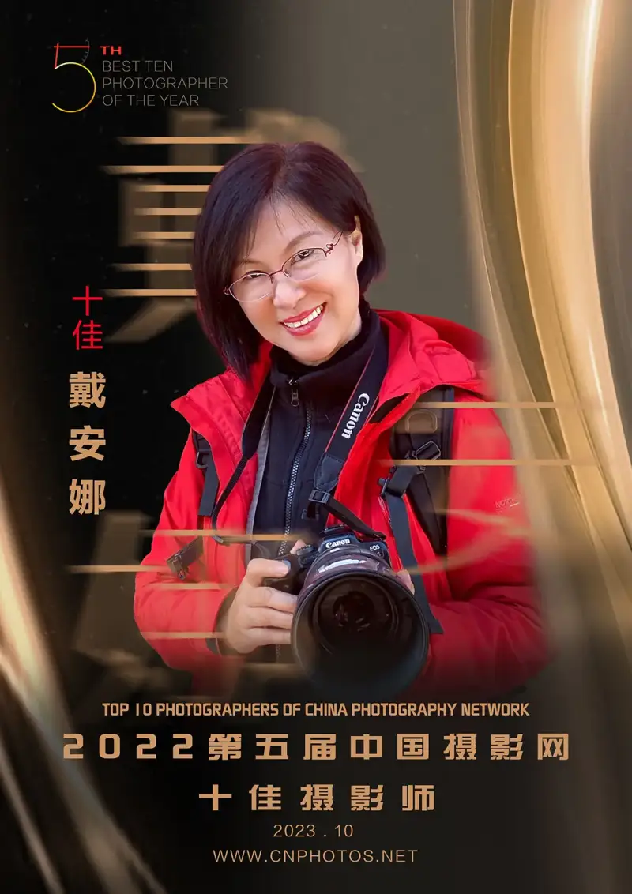
Diana H. Dai is a freelance photographer and a signed photographer of China Photo Network.
Her work Warming made the Birch Cup China Creative Photography exhibition. Missing won the phone and drone grand prize at the finals of the Global Chinese Travel Photography Competition. The Shape of Wind was shown in the Shenzhen Annual Photography Exhibition. Her series From Foot Binding to Live-stream Selling: the 5G Life of a Bound-foot Grandma, Before Becoming a Buddha, Joys of Daily Life, The Lonely City Person, A Chance Meeting in Xiao Ruo Village, Romantic France, Buddha Images in This World, and The Color of Rain have appeared in People's Photography, Photography World, People's Daily, and on platforms such as Xuexi China, Travel Photo Net, and China Photo Network. In 2018, her Buddhist-themed series was shown at the Spirit Vulture Descends Buddhist Art Exhibition at Lingyin Temple in Hangzhou, and she donated all of it to the temple. Several phone photos were selected for the Paris Photo fair at the Grand Palais in 2018 and 2019. In February 2022, with government funding, she held a large one-month solo show in Haikou, Hainan.
Zhang Yue, reporter for China Photo Network: Is Diana your real name, or a stage name?
Diana, China Photo Network top-ten photographer:This name is now on my ID card. When I went to the United States to study more than 30 years ago, taking an English name was common and made it easy to communicate with people around me. Later, for work, I became a U.S. citizen. My family name stayed the same, but my given name changed, and Diana H. Dai was formally registered. I have used it ever since. In the United States, Diana is a very common name. If you call it out anywhere, plenty of people turn around. Back in China, the name Diana is easy to remember, and that has been a small advantage.
Zhang Yue: I read online that some call you a photographer who fell from the sky. What does that mean? Can you tell us?
Diana:On my path in photography, from a standing start to running, the name Diana moved from unknown to known in a very short time. The people who knew me around me did not know I had begun to photograph, while the people who knew my work were all online friends I had never met. In some places, fellow photographers even set up a Diana work discussion group to collect and share what I published. Once, when I took part in the People and Environment Photography Competition in Shanghai, my work Longing for Return won the top Fine Work prize. When a reporter interviewed me, they gave me that title. Ha, seeing it again today, I feel a little uneasy.
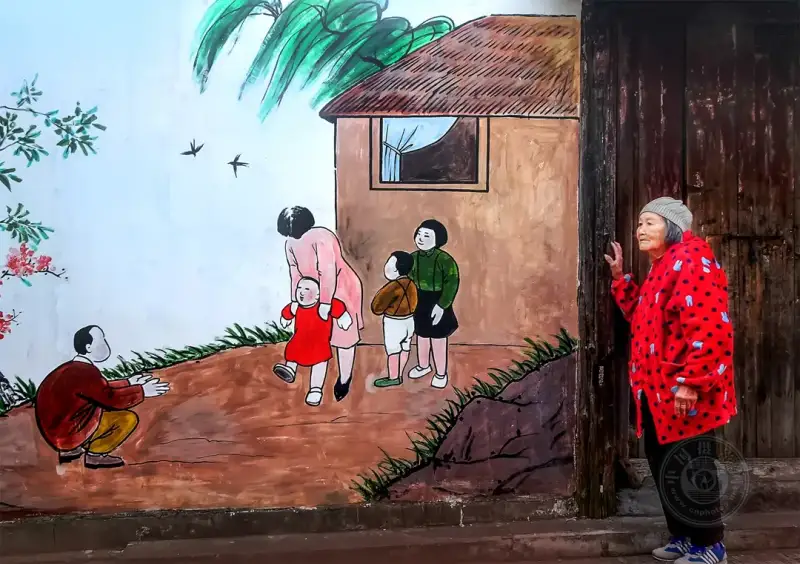
Longing for Return, by Diana
Zhang Yue: From your resume, you only began to study photography in 2017, yet you won first place in the Huawei Global Mobile Photography Competition that same year. In 2018, your phone shot Missing won the phone and drone grand prize at the Global Chinese Travel Photography Competition. Can you share the process and your feelings at the time?
Diana:Years ago, when I traveled the world, I could not use a camera and only recorded each journey in words. My first trip with a camera was to Sri Lanka in 2018. During a ride on the local hill train, in a car that was hot, crowded, noisy, and hard to breathe in, I used my phone to catch the moment when two carriages passed each other. In that instant, a poignant frame was born.
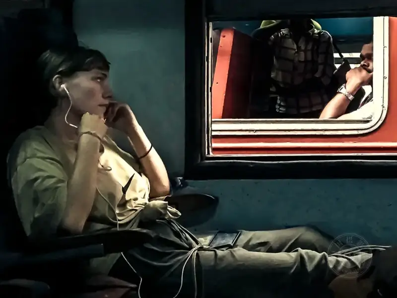
Missing, by Diana
Zhang Yue: The noted theorist and critic Chen Xiaobo wrote, This is a scene you could not stage. The author caught the eye contact between a middle-aged man and a woman across two carriages of two different trains. More importantly, this phone photo brings out the emotional expression. On top of that, the tone is good and carries just the right sense of nostalgia.
Diana:The Huawei Global Chinese Travel Photography Competition runs from monthly to quarterly rounds and on to the year-end final. It is a very long season. This was a casual online entry of mine, and at first I did not know it was an international event. I only slowly learned as it went. Every step my work took felt both exciting and tense, and I cared more and more about the result. In the end, the waiting was as anxious as waiting for a college admission letter. One day, while buying vegetables at the market, I saw a message on my phone. I had finally won the grand prize. Wow, it lit up all my dopamine at once. My face flushed, and I chattered away at the vegetable seller. She said she understood none of it, only that I was happy. Once the excitement wore off, I realized I had lost the vegetables I bought.
After only a few months of photography, my work reached an international stage. Others did not believe it, and neither did I. I could only joke that I had no skill and it was all luck.
This competition had an outstanding jury of seven professionals, including Wang Miao, Wang Yao, Wang Wenlan, Liu Yang, Liu Xiangcheng, Li Ge, and Chen Xiaobo. At the awards ceremony, an organizer told me, Among nearly 30,000 works from 102 countries, your Missing stood out. It was the only work approved by all seven judges. Hearing that, I felt hot all over and was moved again.
More than 20 media outlets worldwide reported the ceremony that day, and a Russian TV station broadcast it live. Under the flashing spotlights, I was the lead for a moment. After that, I signed with the organizer, Hong Kong China Travel Press, and I remain their senior signed photographer. This is a height that most photographers may not reach in a lifetime, and I stepped onto it almost by accident.
Zhang Yue: Your phone shot Warming was selected for the Birch Cup China Creative Photography Exhibition from more than 90,000 nationwide entries, and it won second prize in the Huawei Global Mobile Photography Competition. This creative, simply composed image quickly spread across the platforms. Can you talk about its background?
Diana:Picking up a camera does not make you a photographer. Taking pictures and photography are different stages of expression. Taking pictures has no threshold, but photography has steps.
After a year or more of photography, and many awards, I no longer cheered as much. I slowly settled down and began to reflect. In this age of big data, when everyone takes pictures and hundreds of millions of images fill every platform each day, the only way to make one image linger in a viewer's eyes is to combine form and content into a unique frame.
When I was young, a love of words stayed with me as I grew. I published many poems and essays. One essay about rain and snow was even collected in a college entrance guide of that year.
My love of wind, rain, and snow grew naturally. I really wanted to express this feeling through photography. So I collected matches of many colors from friends. Through wind, rain, and snow, I spent a whole winter fussing over piles of match photos, thinking they would become a series. Yet one photo, Warming, overshadowed all the other match shots on my drive. As senior photographers say, a single work is built on a pile of rejects.
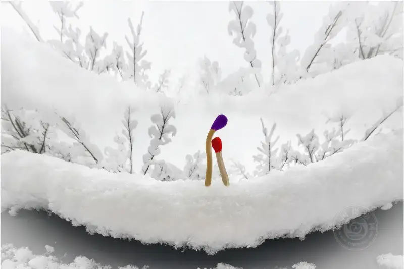
Warming, by Diana
Warming was one of the earlier shots to take shape in the match series. At the time, my passion for photography was still at a peak, and submitting entries blindly had become a routine.
In early 2020, I was traveling and photographing in Bangladesh when I received a request to send my files for the Birch Cup China Creative Photography Competition. I asked a fellow photographer what level of event it was, and later learned it was a national-level event. I also began to gather information about it online. Out of more than 90,000 entries nationwide, only three phone photos were selected, and mine was again picked by the judges golden touch.
The personified expression in the work made readers remember it quickly, and it spread. Many netizens used it as their WeChat or Weibo avatar. Some teachers used it as a teaching example in class or in their articles to explain points. This gave me real comfort. The next year, the photo took part in the Beijing International Photography Week exhibition. Among more than 3,000 works, it became one of the cover images. In the same year, it won second prize in the Huawei Global Mobile Photography Competition and was selected for the Huawei New Image Awards. After Warming, I shot The Shape of Wind, The Shape of Water, and other wind, flower, snow, and moon images. These were recognized and won awards in print and new media such as People's Photography, Photography World, and Camera. I also won an award in the TOOLOTS Cup International Environmental Photography Competition, and my work was selected for the 2021 Shenzhen Annual Photography Exhibition.
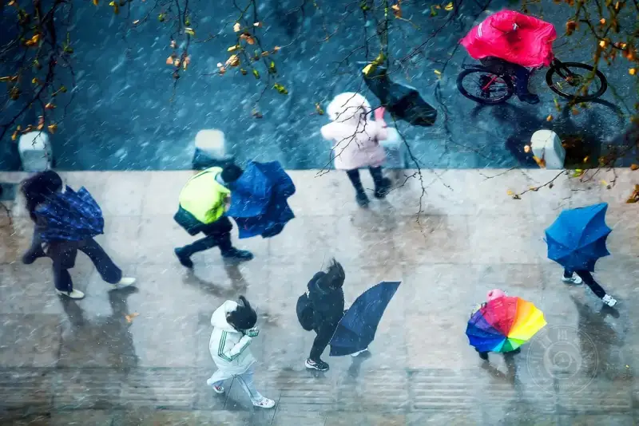
The Shape of Wind, by Diana
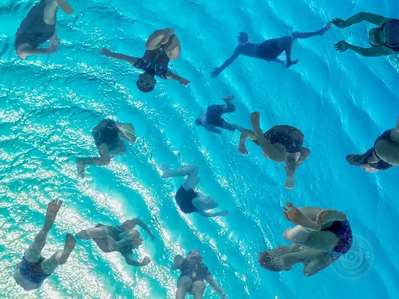
The Shape of Water, by Diana
Zhang Yue: Your work was shown at the Grand Palais in Paris two years running, 2018 and 2019. Do you think entering the photography world this fast was luck or ability?
Diana:Because I took part in Huawei competitions and won several times, I became a Huawei contracted photographer. Each time Huawei released a new phone, we had a project plan to test the new device within a set time and shoot the images Huawei needed. I learned while shooting and explored while learning, and I gradually mastered the camera features of Huawei phones and used them freely. From pre-production to post-processing, the work had to show a distinctive result. Huawei's annual new image awards are an international event. The works shown at the Grand Palais are the best of thousands.
Phone photography was the leading line of my path. Every award or exhibition was a form of recognition, like a shot of energy that made me fully recover and keep going.
What is ability? I think ability is the underlying tone of a life, and that tone is our store of knowledge and life insight. Like other arts, that base sets the colors of the art you create, and it sets how far you can go in photography. We keep accumulating through learning and settling through accumulation. When the time is ripe, that is when we use the lens to express ourselves truthfully.
Zhang Yue: You won the China Photo Network top-ten award in both 2021 and 2022. This year's Buddha Images in This World and last year's Before Becoming a Buddha are both Buddhist-themed. Can you talk about the original idea and approach behind Buddha Images in This World?
Diana:I am not a Buddhist, but the mystery of Buddhism has long been a door I wanted to open. After seeing the Buddhist-themed work of many senior photographers, I wanted a chance to take on the subject myself. By chance, I met Professor Huang Zheng, assistant to the head of the Hangzhou Buddhist Academy. In July 2018, he introduced me and I moved into Lingyin Temple in Hangzhou. It was a rare chance. In this special setting, I quieted down to adapt and observe. I learned the schedule of the monks and prepared fully. On the condition that I did not disturb the monks or visitors, every work was shot candidly. I sent the rough images of each day to some Buddhist friends for discussion and outside advice. After more than a week of shooting day and night, I gathered a large set of drafts. Back at my computer, after careful sorting and selection, the final works came out.
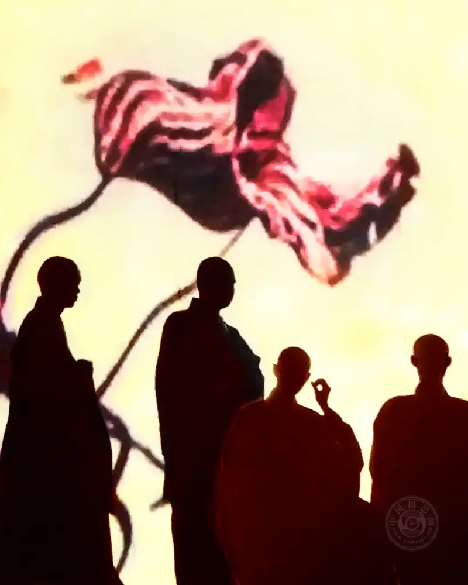
Earthly Life, by Diana
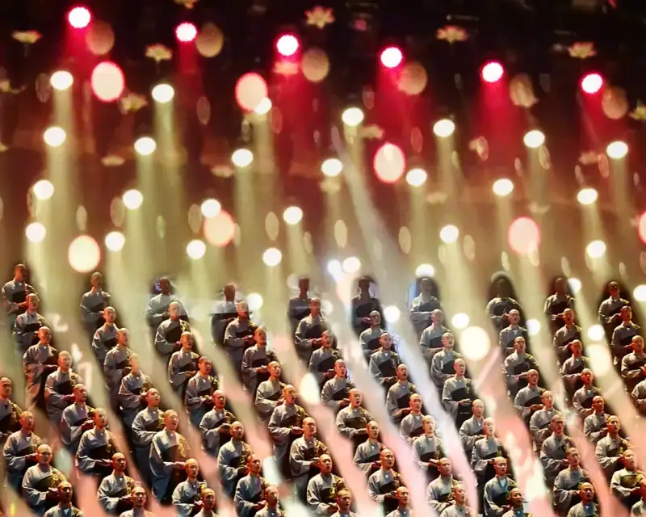
Earthly Life, by Diana
In November 2018, my Buddhist series was shown at the Spirit Vulture Descends Buddhist Art Exhibition at Lingyin Temple, and it won wide praise. In the end, I donated all of it to the temple as a permanent offering. Through showing this work, I met more Buddhists. On their recommendation, I was able to enter temples in different cities and come face to face with monks who had practiced for years, with believers, worshippers, and with the teachers and students of the Buddhist academy. After more than four years of travel, exchange, shooting, gathering, and selection, I refined this series, Buddha Images in This World. I know my own roots of wisdom are not deep, but the image of the Buddha is already branded on my heart. My lens will not give up this series, and I will keep improving it whenever I can.
Zhang Yue: In 2021, your Before Becoming a Buddha won the China Photo Network top-ten award, and in 2023 you won another prize at the first Hero Land Photography Grand Prix. This series seems to have taken you several years on the Taihu peninsula. Can you talk about the process and meaning of Before Becoming a Buddha? What have these awards brought you?
Diana:Chongshan Village in Suzhou sits by the scenic shore of Lake Tai. Nearly a hundred families here have carved Buddha statues for generations. Their devout carving, and their skilled craft that gives life to the statues, has passed down for nearly a hundred years. In 2017, we came here with our teacher to shoot. As a beginner, I had little photographic language to express things, so I recorded, frame by frame, the scenes most people rarely see.
Three years later, I returned to Chongshan Buddha-carving village with friends. The same setting, the same craft, the same statues filling the village, and I had grown naturally familiar with them. I knew they had already taken root in my heart three years before. My inner self kept talking with them in a language I myself could not understand, yet I knew I could read them. I felt that it was not I who shot them, but they who naturally walked into my lens. Over three days, I worked from dawn to dusk and walked every corner of the village. With my lens, I recorded each state, each scene, and each story. This settled the lingering awe in my heart.
After several visits over a few years, I recorded six states of the wood after it is first shaped: a hundred forms, grinding, scattering, abandonment, nirvana, and becoming a Buddha. Watching the six states quietly, I felt deeply that a whole piece of wood becomes a Buddha only through hardship. Is a person's success not the same? But not every piece of wood becomes a Buddha after carving, and not every person succeeds after striving. This is reality.
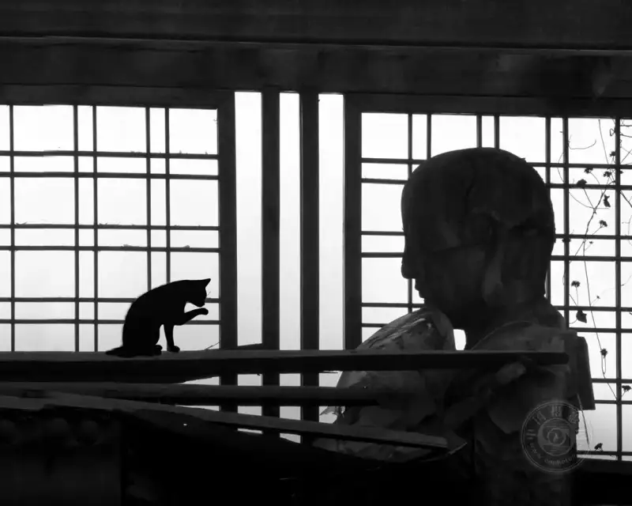
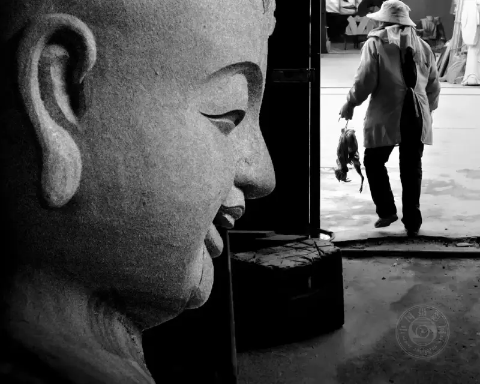
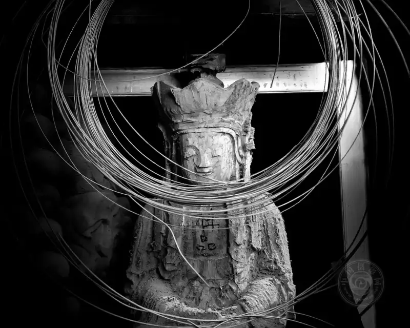
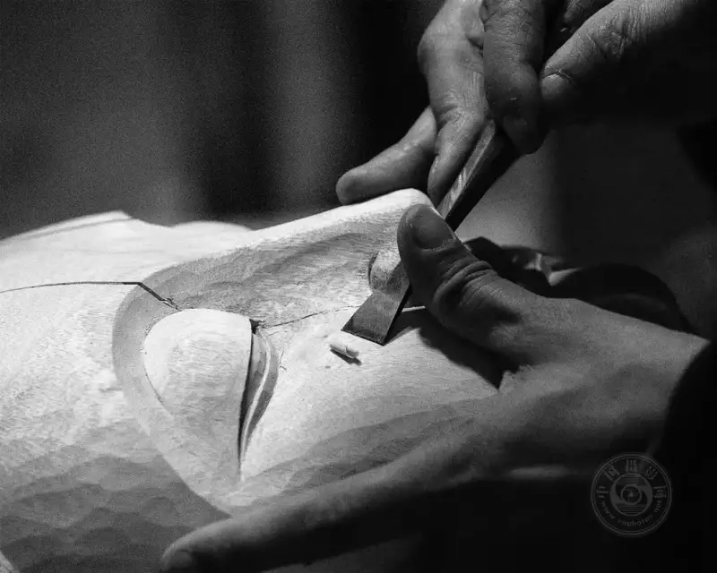
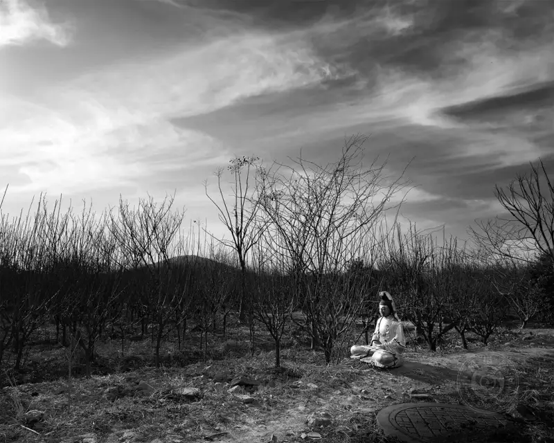
Before Becoming a Buddha, by Diana
After Before Becoming a Buddha was published on Travphotos and China Photo Network, its readership rose above the usual and won strong praise. In 2021, this work brought me the China Photo Network top-ten honor. In 2023, I won a prize at the first Hero Land Photography Grand Prix. The noted photographer Li Qiang wrote, Diana's work differs from earlier image expression in her Buddhist connection and in her deep reach into life. Her images are clean and refined, with a sacred beauty. Showing this series online brought me many followers, but I have not fully let go of my attachment to Chongshan Village. I will return to that land.
At first I photographed the Buddha statue, then the story, and in the end, myself. Man makes the Buddha, and the Buddha shapes man, as human nature awakens to Buddha nature.
Zhang Yue: During the pandemic in 2020, your Gaokao 2020 won the widely expected People's Photography Star Photographer title. What effort made this happen? Can you tell us more about the Gaokao 2020 series? It drew a lot of attention and resonance.
Diana:I often think that a single photo is maybe just one sentence, while a series is an article. When a single sentence cannot express me, shooting a series becomes another step on my path.
A line in photography left its mark on me: shoot well the square kilometer around you. I live in the busy center of Nanjing. The famous Jinling High School is my old school, and the other famous Nanjing No. 9 Middle School lies along the roads I walk. Each time I watch students pass by, and watch parents drop them off in the day and wait at night, I am deeply glad that my child completed her education abroad from an early age, sparing me this hardship.
Each year, the college entrance exam is a focus of all of society, and it touches the family of every student. As a photographer, every social event moves my lens, and the exam became its subject. For three days, I wandered outside different test sites.
For three days, I moved among crowds of students, and for three days, I walked among the waiting parents. With my lens, I searched for each moment that moved me, wanting only to take photos with warmth.
The exam is far from me now, but the lens closed the distance. Over those three days, I watched the students waiting to sit the exam, the parents keeping watch, the police guarding it, the relatives meeting the students after, and the relief of the students when it ended. My own feelings grew through this, and I was moved more than once. I saw an old grandmother walking with faltering steps, the flowers in her hand already crushed, still searching the crowd for her grandson.
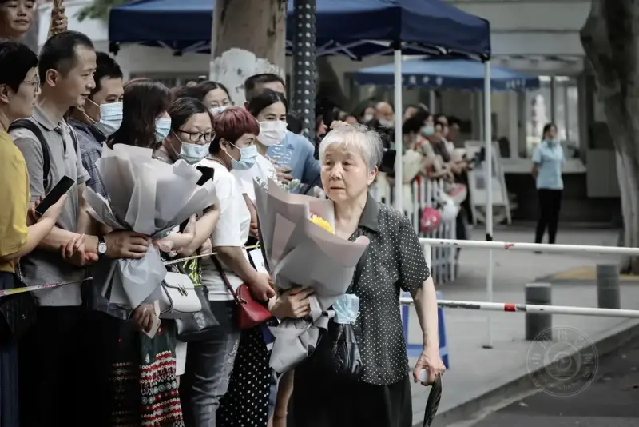
Grandmother Meeting the Student, by Diana
For the three days of the exam, I roasted along and came out with a whole batch of photos. Holding the warm stack, I did not know where to take them. On the recommendation of Zhu Ping, secretary general of the Nanjing Photographers Association, I sent them to People's Photography. Soon they appeared in the Star Photographer column and drew wide attention and resonance.
At the same time the next year, I continued the exam series through color, titled The Tones of the Gaokao. What color should you wear for the exam? This has become a hot topic in exam season. Red clothes mean a good opening, green clothes mean a green light all the way, and a gray and yellow combination means moving toward brilliance. These wordplay meanings are sometimes comical and sometimes charming. But parents always want a lucky omen, to give the students an extra boost.
The colorful clothes outside the test sites are like signal lights pointing the way in life. Following this block of color, my lens recorded the varied fashion show outside the 2022 exam sites. The tension of the exam and the bright colors of the clothing form an interesting contrast, and they show a deep sense of expectation.
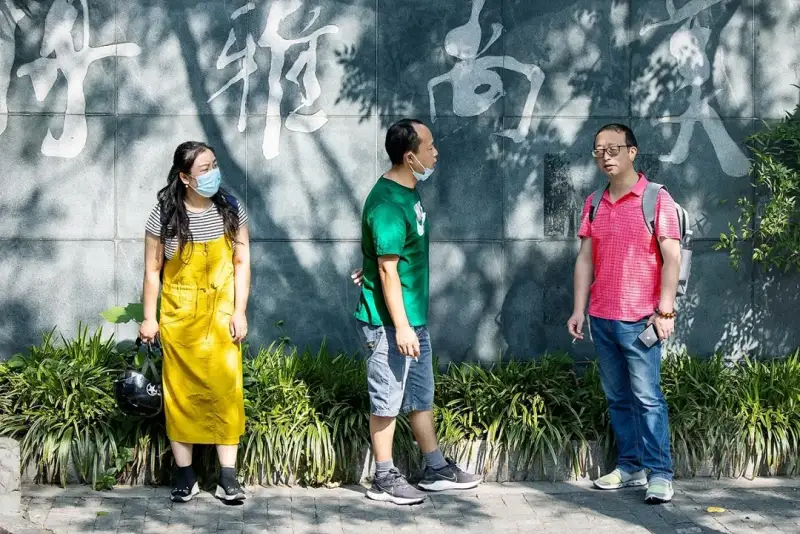
The Colors of the Gaokao, by Diana
After The Tones of the Gaokao appeared on social media, major outlets such as Photography World and Hong Kong China Travel Press quickly shared it. Some people have photographed the exam for more than ten years, but few have approached it from my angle, so it is rather rare. My 2022 exam series again drew high readership and shares.
I photographed the exam for two years running, and both series broke out, which I did not expect.
Zhang Yue: Your series From Foot Binding to Live-streaming: a Bound-foot Grandma Opening a 5G Life drew a strong response online. But many photographers in China have shot foot binding. I saw that Li Nan from Shandong and Qin Junxiao from Guangdong have both photographed and told the full story of this unique part of Chinese history. What led you to take on this subject too? Are you still shooting it? Can you still find bound-foot elders?
Diana:The noted humanistic photographer Qin Junxiao wrote, There were many women with bound feet, and the practice lasted more than a thousand years and touched the whole nation. This is all in the past now, but very few photographers, then or now, have truly taken on this subject. The Chinese-American photographer Diana is the woman who can capture the spirit of the bound-foot woman.
The original idea for this series was to record the culture and history of old China and leave behind a historical record. In our childhood, we mostly saw the bound feet of our grandparents. Back then, we only had an impression and no awareness. We did not realize this generation would disappear and this culture would become history.
Noted humanistic photographers such as Qin Junxiao and Li Nan became famous for photographing bound-foot women. Before I shot, I discussed my idea and plan with fellow photographers and read the related work of my seniors, which inspired me a lot. The difference is the era we shot in. Very few bound-foot elders remain. With the help of fellow photographers, in October 2020, I went alone to Wangjinzhuang in She County, Hebei, and met Cao Liansha, the only healthy bound-foot grandmother left there. She is one of the few bound-foot elders still living in China.
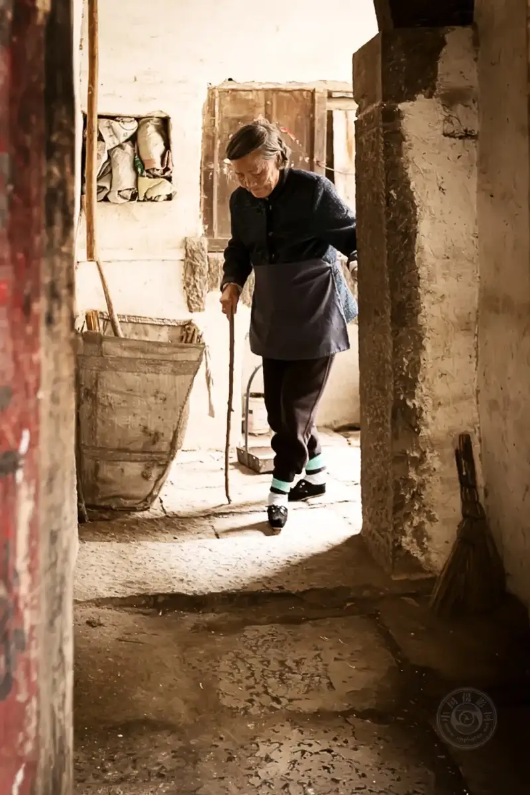
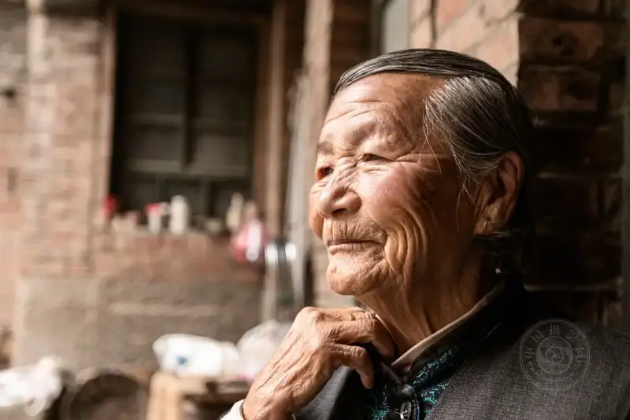
Bound-foot Grandma Cao Liansha, by Diana
Photographers come and go in Wangjinzhuang to shoot Grandma Cao, but few settle in to eat and live with her. Dressed in farm clothes, I was with her day and night, learned her diet and daily routine, and gradually understood her local accent. Talking with Grandma Cao was a key part of the shoot, and her stories always brought me new inspiration. Most precious, I recorded the whole process of her washing her feet. In that era of distorted aesthetics, the bound foot had become a woman's third sexual organ, and it was truly unusual that she let me film it all.
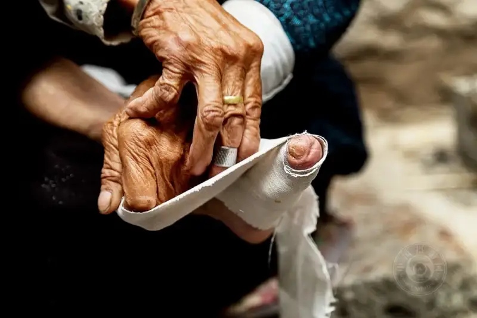
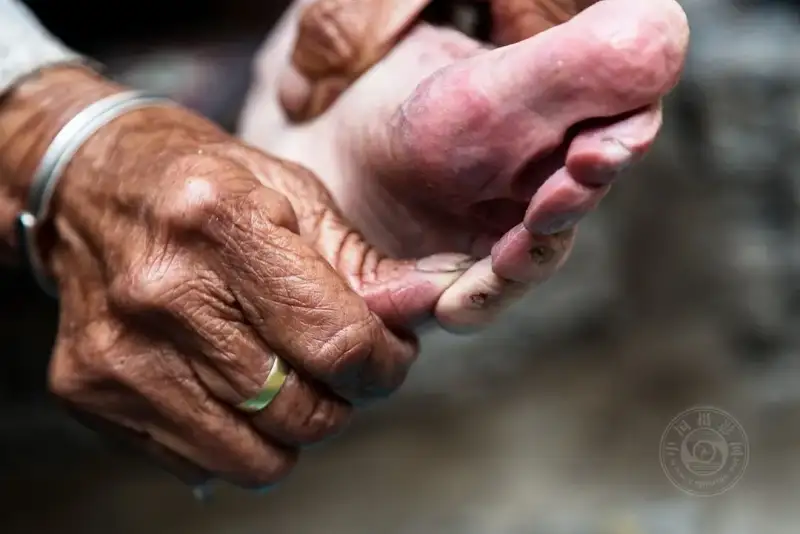
Foot Binding, by Diana
A bound-foot elder from the old era lives in a poor, simple mountain village. Besides farm work, she sews by hand to earn a little pocket money and get by.
During the shoot, I stayed in a tin-roofed room at the head of the village, and right below it was a live-stream sales studio. Coming and going each day, I could feel the energy of the signal. Driven by college students who returned home, the farm products of Wangjinzhuang will surely leave the mountain village and reach the whole country.
The force of this high-tech 5G era has reached this mountain village. With a few other photographers, I wondered what a leap it would be if Grandma Cao sold products on stream.
After steady encouragement, Grandma Cao agreed to step out of her home, enter the network, and face the world by selling on stream. In front of the lens, she was calm and spoke in her unhurried way. You would not have this confidence if you did not know your products. This is a crossing through time, and a one-of-a-kind highlight. Once my shoot had its final highlight, it became a complete story.
The series From Foot Binding to Live-streaming was published worldwide first by Hong Kong China Travel Press. It soon spread across Sohu, Weibo, and Facebook, and through major outlets such as Photography World, People's Daily, and Xuexi China. The Modern Family News in my hometown Nanjing followed with a front-page headline. At the same time, a single image won a prize from China News Service's photo agency.
The times move and change, and the people and stories of each era look, to later generations, either plain, or legendary, or a sigh, or something to savor.
The image is a record of the past, a conversation with the present, and a memory for the future. From old photos of sixty or seventy years ago, to the deeply lined face of the grandmother, to her focus while selling on stream, there is both the weathered sense of history and the warmth of seeing someone as if in person. It is not for sensationalism but for remembrance, not to court attention but to bear witness.
Zhang Yue: In 2020, you were elected to the presidium of the Hong Kong-Shenzhen-Zhuhai-Macao Photographic Alliance. This shows your work has won strong social recognition. Can you talk about it?
Diana:After my bound-foot grandmother story was published, I met the noted photographer and publisher Qin Junxiao, who became famous for photographing bound feet. After several exchanges, Mr. Qin recommended me to the presidium of the Hong Kong-Shenzhen-Zhuhai-Macao Photographic Alliance. Under the direct leadership of Chairman Qin, the group is active on photography platforms across the four cities and nationwide. At the same time, there are frequent offline events, which added many chances to exchange and learn, and widened my own offline activity. Chairman Qin has always supported and protected newcomers. As a senior photographer, he is respected and loved by photographers everywhere. Through this platform, many of my works were promoted and shared. On its recommendation, my works were collected and auctioned as collectibles. I must say Chairman Qin has been a benefactor on my path in photography.
Zhang Yue: The Telling Stories Through the Lens: Diana Photography Exhibition, hosted by the Yangpu Economic Development Zone Library in Haikou, Hainan, and co-organized by Aphoto, opened in February 2022. This is a goal that many photographers who have worked for decades may find hard to reach. How did you do it? Can you share?
Diana:Since I took up photography, I have kept a habit: when I have a photo I am happy with, I post it to my moments, both to hear the views of fellow photographers and to save and record. My online friend Tian Huiqing is the head of the Yangpu library and a practical promoter of culture. She has long followed my photography and the humanistic themes in it, and we became like-minded. To enrich local cultural life and raise public cultural literacy, she and her team planned a series of cultural exchange events, with strong support from the local government. The Diana exhibition was the first in the series. The large one-month show drew many local photographers. I especially enjoyed coming among them, talking face to face and sharing the stories behind the work. Along with the show, I held a talk where author and readers met directly. The result encouraged local photography enthusiasts to deepen the humanistic expression in their work and raise the cultural depth of the art. Both the organizers and I felt great comfort in this.
Aphoto Artron has combined nearly 30 years of technology and experience in culture and art. For this exhibition, Artron provided full professional technical support for the images, from editing design, color grading, and layout to professional output, escorting the show from start to finish.
Zhang Yue: In just a few years, the name Diana has become well known in photography, but beyond your photography, people may not know your other interests. Can you talk about your hobbies outside photography?
Diana:Before photography, I had many hobbies: dance, golf, horseback riding, skiing, swimming, travel, writing, reading, film, and music. These built my cultural depth and laid the physical basis for my photography. I have long believed that a person's cultural depth, breadth of mind, and life insight set how far they can go on any artistic path.
Zhang Yue: In your current work, do you mainly use a camera, or do you still use a phone? Can the image quality of a phone still meet your creative needs and standards?
Diana:As a Huawei contracted photographer, I may know a little more about phone camera features and techniques than most people. I have given large phone photography talks and shared work in many cities, including at government offices, businesses, banks, and photography groups, and I have taught online. It has been well received. As the data age develops fast, phone photography has gradually become a basic need.
But I still lean toward camera photography. A camera is a professional tool, while a phone only has a camera function, and the results differ. The platforms for a picture and for a work are not the same. I recall someone saying that on a phone you see only the surface, in a book you see the flesh and bone, and in a gallery you see the essence.
The work I provide for Huawei must use Huawei devices, of course. At large shoots, a camera is essential and the phone is a support. For everyday street shooting, I carry a compact camera. Like every modern person, my phone is, of course, already glued to my hand.
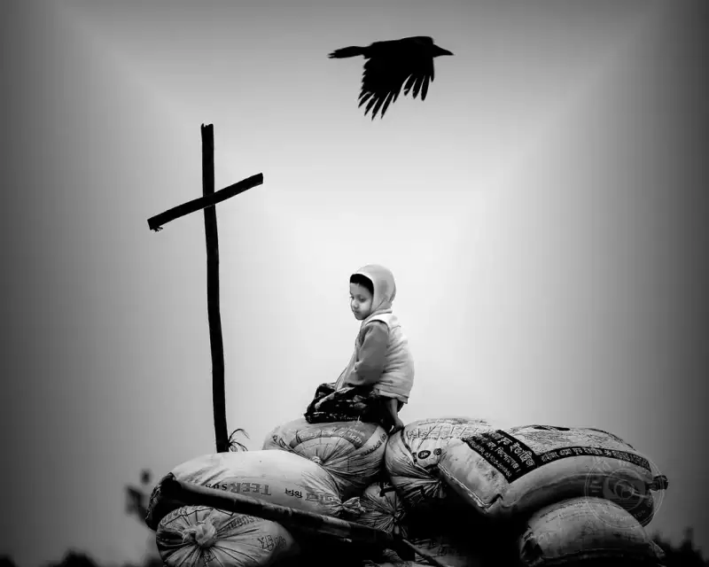
Paradise Lost, Prayer, by Diana
Zhang Yue: Your Paradise Lost, Prayer series, selected for the Shanghai People and Environment Photography Competition, set me thinking. Can you tell us the time, place, and process behind this work? How did you come across the scene and take the photo?
Diana:I returned to China from Bangladesh in January 2020, and cities began to lock down one after another. Like everyone, people stayed where they were. Yet for me, coming back from a field trip is when the real journey begins, because I then stay home at my desk to sort the bits and pieces I collected. Among tens of thousands of photos, I relive the trip, pull out a thread of thought, and compile a short travel summary. The series Paradise Lost is one of those summaries of my trip to Bangladesh.
Poverty in Bangladesh comes from limited natural resources, high population density, and frequent natural disasters, and it is one of the least developed countries in the world. Fully prepared and carrying heavy gear, we came to the Rohingya refugee camp on the border of Myanmar and Bangladesh, the largest refugee camp in the world. When we touched their lives, we were still shaken.
The shock was not only the environment or the people, but a sense of being beyond reality, like scenes I had only seen in films, now appearing before me one by one. The Rohingya camp is a closed, cut-off place. The Rohingya people inside depend almost entirely on food aid from the UN World Food Programme, because they are confined to the camp and barred from formal work. There is no production, no creation. The only production is reproduction, so here there is nothing but children. I photographed the children, and the children chased me. The shooting had to be short, frequent, and fast. The pocketful of snacks I brought each day was taken in an instant. Later I found the leader of the children and gave him the small change and snacks, so he managed how the children swarmed me, and the shooting went smoothly.
The image you mention, Prayer, is part of my Paradise Lost series. A child stares blankly in a boat piled with sandbags, and the wooden frame and the crows flying overhead create a special mood. I took several shots in a burst. In the one below, the child's pose fits a prayer, but the setting was incomplete, so I filtered it out.
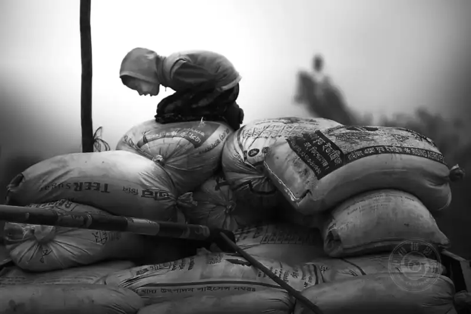
Paradise Lost, Prayer, by Diana
While sorting the photos, I found that the children's eyes all carried a strong sense of place. Perhaps few foreigners come to this land. The shift from fear to curiosity to letting down the guard was the emotional expression of most of them.
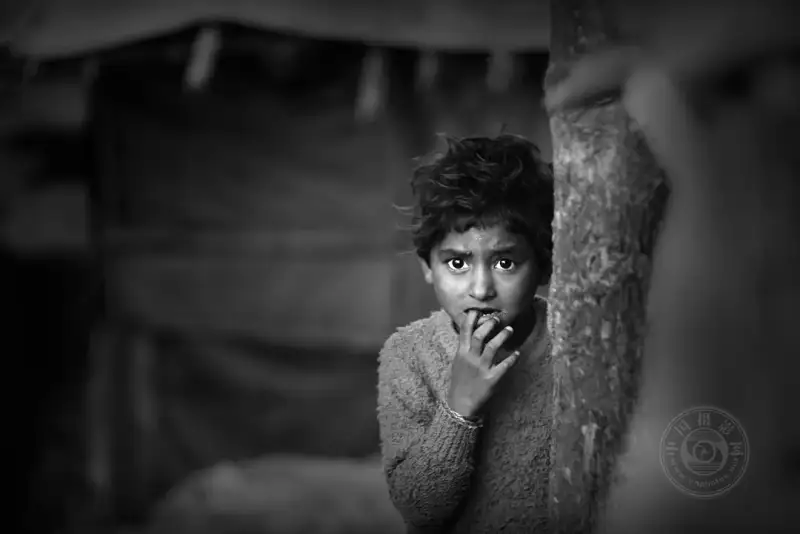
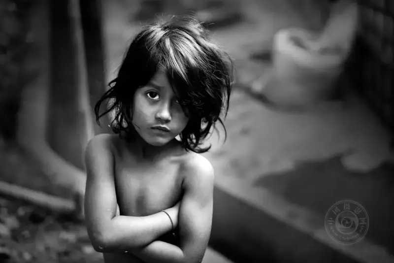
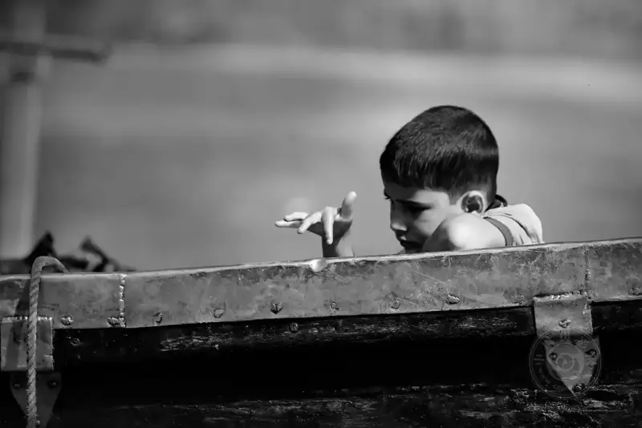
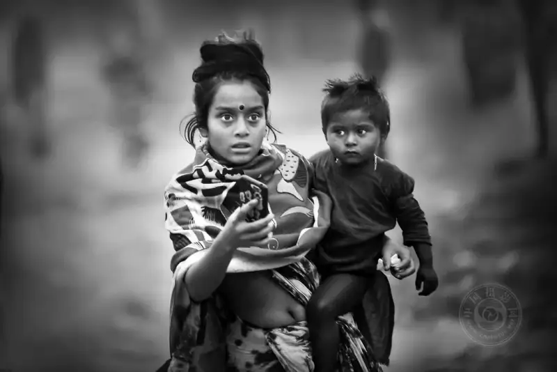
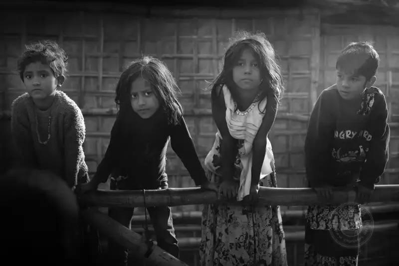
Paradise Lost, Prayer, by Diana
The first feeling after returning to China from Bangladesh was that I had finally come back to a civilized society.
Zhang Yue: I see your photographic drive has been high in recent years, and you have been to Sri Lanka, Thailand, India, and Bangladesh. Can you talk about why you go to such distant places to shoot?
Diana:Compared with familiar places, distant places are the ones where photos come easily. In a new environment, a photographer's focus of observation quickly sharpens. The lens is our eye, and it becomes especially quick and sharp.
Just before the outbreak in 2020, I rushed back from Bangladesh. As soon as the borders opened this February, I went to Thailand. Over more than a month, I traveled the whole country from south to north and brought back work I am happy with, and won a major award. Compared with the Arctic, which I have visited many times, these countries feel like my doorstep.
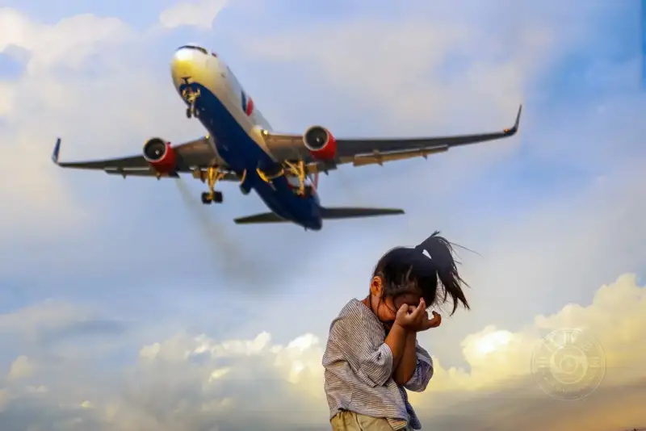
Maikhao Beach, Thailand, by Diana
Zhang Yue: You said that in five-plus years you have shot more than 280,000 images and spent more than 10,000 hours editing at the computer. Where do you get such energy? Are you now a professional photographer? If so, can you support yourself through photography?
Diana:Some say interest and passion are a lifelong tonic. From the start of photography until now, I have been stirred by this drive. I spend more than ten hours a day on photography, either on the road or bent over the computer. Ignoring family and skipping meals is normal. A few years ago, while working with Huawei, my enthusiasm may have run too high, and a saying spread among my teammates: if Sister Na is not famous, it is against heaven. Haha.
Doing one thing well always involves a lot of pain. On my path in photography, only my family and I know the hardships I have endured. But when you are running, you do not feel the pain.
Taking pictures has no threshold, but photography has steps. From a picture to a work, we give not only gear, time, and legwork, but also a store of knowledge and life insight. A master once said that a photographer needs the mind of a scholar, the eye of a hunter, and the heart of a poet. To have these qualities, reading is the best shortcut. So two or three hours of reading each day has become my steady routine.
To become an expert in a field takes 10,000 hours. By the ratio, if you work eight hours a day, five days a week, you need at least five years. This is the 10,000-hour rule of the writer Gladwell.
In photography, although I long passed 10,000 hours, success is still far off. I think the greatest success is simply to enjoy the process of giving.
Over the years, my series From Foot Binding to Live-streaming: the 5G Life of a Bound-foot Grandma, Before Becoming a Buddha, Joys of Daily Life, The Lonely City Person, A Chance Meeting in Xiao Ruo Village, Romantic France, Buddha Images in This World, The Color of Rain, Gaokao 2020, The Colors of the Gaokao, Paradise Lost, Childhood, and Street Expressions have appeared on the People's Daily client, People's Photography, Photography World, China Photo Network, Xuexi China, Hong Kong-Shenzhen-Zhuhai-Macao Photography, Mirror China, Documentary Photography, and Travel Photo Net. Recognition from society and from my peers is the greatest reward for all my effort.
I am now a homemaker and freelance photographer. I have always kept interest and work separate. If you use an interest to make money, it becomes work. We are past the age of earning, and planned spending is what matters. So I still shoot for interest, hobby, and expression. It is my spiritual support and an outlet for emotion, just as I was devoted to writing poetry when I was young. Now shooting is a daily part of life. If I go a few days without shooting, I feel the lens would grow mold. If one day I put the camera down, it will be because I have found another force that supports my spirit.
Zhang Yue: As a Chinese-American with many identities, poet, dancer, fashion model, and graphic designer, and as I understand it, you studied, worked, and lived in the U.S. for nearly 30 years. Do you usually live in the United States? Do you come back to China on purpose to shoot each time?
Diana:When I was young I loved poetry, after thirty I loved dance, and now I love photography. Each stage of my life has been driven forward by interest and hobby, and each immersion has been self-forgetful.
Writing poetry was the spiritual sustenance of my growth, and it became my first way to express my inner self. This feeling stays in my blood. In the busy rhythm of life, when a thread of poetry occasionally comes out to tickle me, it adds a quiet joy to my days. We now rarely feel the urge to write poems, but the literary youth of my young years still gather in a Youth Literature Academy group. Many of them, with a pen, became public figures and the backbone of culture. Although our elders and teachers have slowly grown old and left, we who are no longer young still hold a graying pen and, now and then, write the rhythm and taste of youth in unfamiliar online language. This is the quiet, lifelong hold that poetry has had on us.
Dance was the best release in my repeating life in the U.S., and an important way for me to stay fit. I had my own dance room at home, and after work I invited a professional teacher for one-on-one coaching. My flexibility and figure made people think I was born to dance. Whether or not that was true, my love of dance filled all my free time. Later, I gave up my well-paid U.S. job and devoted myself to dance, taking part in countless competitions. The trophies and certificates at home represent the intensity of that stage of my life. In California, I once choreographed, rehearsed, and staged a show for a community group as a volunteer. All the proceeds were donated to charity. The beauty of dance is defeated by time. When my body could no longer express that beauty, I studied and trained, worked as a simultaneous interpreter, and earned an international judge's license in ballroom dance, which closed the book on my 18 years of ballroom dance.
Graphic design was my profession. I studied it in the U.S. and used it there. Professional work serves the client and limits creativity. It is not art, but an essential way to earn a living, at best a tool of the workplace. In Taiwan, I once had my own design studio.
Fashion modeling, after I strayed from my main work, was a way to express my own existence. It did not last long, but the work was plentiful. I walked runways and appeared on television. The repetitive work offered little novelty, and soon I wanted to change tracks.
Once, a friend invited me to pose as a portrait model. Facing a crowd of long lenses, I used my phone to record how they worked. Back home, I played with the photos on the computer and found some bright spots in the ordinary work shots. I showed them to a few photographer teachers. Perhaps their expectations of me were not high, and they were surprised by what I had shot. From the honest reactions on their faces, I knew I could play at photography too. This track naturally spread out under my feet. From then on, bold and unaware, I stepped onto the busy road of photography. That was the late summer and early autumn of 2017.
The finest years of my life were spent in the U.S. and Taiwan, but my hometown will always be where I grew up. I became a U.S. citizen for work, and after decades of ups and downs, returning felt inevitable. My heart is Chinese, and my stomach is Chinese. Abroad there is an easy life, with mountains, water, and loneliness. At home there is soil that nourishes life, with wind, rain, and bustle. The water of my hometown feeds me more, the soil grows me more, and its moon gives me more peace. Now I have family both in the U.S. and in China, and no matter where I live, my longing for my relatives is a knot I will never untie for the rest of my life.
Zhang Yue: Now, as a photographer, do you prefer to point your lens at China or at the United States?
Diana:I point it at what is around me, and I shoot well the people and events in the square kilometer near me. Now the lens is another organ grown onto me, and an eye for expressing my thoughts. As long as my feet are on the road, my lens is in my hand. I will slowly record the corners of this world I can reach, only hoping you will walk with me.
Zhang Yue: Thank you for the interview. I wish your photography even greater success.
Zhang Yue
Reporter for China Photo Network,
a post-90s woman of Chinese literature, based in Beijing,
who has published hundreds of thousands of words of arts criticism and political commentary.
She is now a master's student in photography and digital media at the graduate school of the Chinese National Academy of Arts,
with a special love for documentary photography.